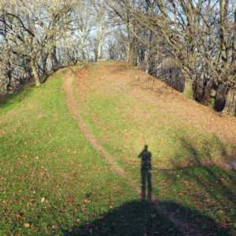
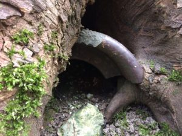
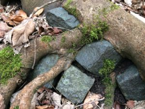
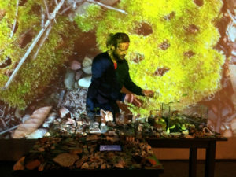
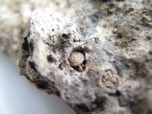
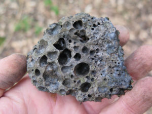

Archeologie di guerra

Leone Contini per eXtemporanea
A compendio del podcast Cronache dalla Terra di Sotto pubblichiamo un contributo audio (Feed RSS) e uno scritto di Leone Contini, artista. Musiche di colette et izis.
Parco Lambro, 1976
La musica cresce, sferza la superficie del parco, ma il ritmo ribelle penetra a stento la sua pelle di prato e terra e là dentro, nei cumuli rigonfi di macerie, arriva attutito, come attraverso grandi distanze. Del resto la generazione in cui si è compiuto il ciclo completo della ricostruzione post-bellica è sull’orlo di una nuova era, l’onda di quell’estate è l’ultima di quasi un decennio di tempeste rigenerative. Il corpo aperto e nudo del Re sta per rivestirsi, serrato nelle logiche del riflusso nel privato, e di nuovi edonismi. Dopo quell’estate la semantica del parco si inabissa lasciando dietro di sé un velo geologico sottilissimo, nella cui trama restano impigliate immondizia minuta e grandi idee. Nel 1976 la Montagnetta, agli antipodi della città, è ancora un gigante brullo (ma per poco).

La Montagnetta di San Siro
Costruita a partire dal 1947 con i detriti dei bombardamenti sui quartieri occidentali di Milano condivide con i rilievi artificiali del Parco Lambro una comune origine nella distruzione bellica. Le due discariche di guerra hanno però avuto esistenze divergenti. La Montagnetta è nata sotto i migliori auspici, essendo parte costitutiva della progettazione del Qt8 di Piero Bottoni, mentre le sorelle dei quartieri orientali appaiono ancora oggi selvagge, colline disarmoniche, scoscese, coperte di boscaglia o rigonfie di macerie che sembrano poter squarciare da un momento all’altro la sottile trama di erba, radici e terra che le trattiene. Nell’estate in cui il Festival del Proletariato Giovanile esala il suo ultimo respiro tra quei cumuli senza nome, la Montagnetta di San Siro è del resto ancora capace di generare sogni – sogni molto più piccoli, realizzabili e concreti rispetto a quelli sconfitti tra le macerie dei quartieri orientali. Ed è proprio del 1976 una piantumazione pilota, curata da un’associazione di quartiere, preludio del rimboschimento massiccio del 1979, con alberi acquistati in un vivaio toscano grazie alle donazioni dei cittadini. Nel giugno del 1980 viene organizzata una tre giorni di risottate, polente, declamazioni di poesie e canzoni in dialetto: sono in ventimila a festeggiare la nuova vita della Montagnetta, e il suo “boschet del Ghino”, dove Meneghino si è trasmutato in Ghino, mascotte quasi-magica e genius loci di una discarica di guerra finalmente consacrata a parco pubblico. Qui il decennio del rampantismo si apre dunque in modo inatteso, nel segno di una Milano popolare, laboriosa e dialettale, nostalgica del proprio passato e intenta a coltivare il futuro. Questa moltitudine meneghina appare, a differenza della gioventù ribelle del Parco Lambro, spiccatamente intergenerazionale. Inoltre spesso rievoca la distruzione della città, consapevole che la “montagna de San Sir”, dove si viene a festeggiare è prima di tutto “tomba de noster cà” – e forse per questo così visceralmente amata. Questo fervore auto-organizzativo e velato di melanconia sembra tuttavia stemperarsi progressivamente negli anni successivi, mentre Milano si consacra a nuove barbarie, tanto che gli ultimi “dì della Montagnetta” risalgono all’estate del 1983. Nel 1985 però la comunità è ancora attiva, e nuovamente auto-finanzia un rimboschimento successivo alla grande gelata di quell’inverno, che uccide molte piante. A distanza di trent’anni sono questi alberi gli unici interlocutori con gli strati profondi della collina, e con le loro radici avvolgono quei detriti perduti, li consumano, se ne nutrono.

Monte Scherbelino, Stoccarda, Gennaio 2018
Pioggia leggera, la collina è umida e silenziosa. Si avvicina un corridore solitario, taglio nella boscaglia per non incontrarlo. Cammino piano e ascolto il respiro di Scherbelino. Un tubo rotto di terracotta smaltata mi osserva, nascosto tra le foglie marcescenti e profumate del sottobosco, tutt’intorno tronchi caduti si trasformano in terra. Mi arrampico tra le betulle per raggiungere il primo terrazzamento, la salita è scoscesa. Piccoli gomitoli di sterco di lombrico sono aggrappati alla parete scivolosa, al mio passaggio rotolano in piccole fertili frane che si sfaldano alla base del pendio. La radura pianeggiante è rivolta al lato sud della collina, ma la luce è già bassa. Avanzo in mezzo ad arbusti radi, tra segni di bivacchi recenti e immondizia inclassificabile: cocci di ceramica, un tubetto di alluminio, con un font, anni 20-30 deutsche speedoil-gesellschafter hamburg-fu. Struckholt, piastrelle rotte, pezzi di sanitari. Ma un reperto non lascia dubbi sulla sua origine: sul fondo concavo di un frammento di porcellana decorato con motivi floreali si è solidificata una piccola goccia di vetro fuso: un terribile gioiello forgiato dal caso tra le macerie di una casa trasformata in fornace, 70 anni fa.

Palermo, Maggio 2018
A distanza di 75 anni quello che resta di un caseggiato bombardato sono collinette di macerie ricoperte di humus e infestate di erbaccia. Il centro di Palermo è pieno di questi giardini inaccessibili, (intravisti attraverso cancelli allucchettati o inferriate) su cui si alzano i residui dei muri portanti. Il loro profilo sbocconcellato è stato generalmente risanato, semplificato in linee rette spesso oblique, sfalsate rispetto alle case circostanti. Queste strutture disfunzionali si aggrappano al tessuto intatto della città, come cicatrici. Dove la forza dell’esplosione fu maggiore le strutture in muratura sono basse, spesso nascoste nella vegetazione o semi-sepolte dai crolli, e tendono a salire progressivamente in linee spezzate verso le case illese, come una voragine cubista che cerca di saldarsi alla figurazione guttusiana della città. Agli occhi del turista quelle cicatrici sono invisibili poichè incomprensibili, ma sono di fatto inaccessibili a tutti noi, per cui quel trauma non è che il racconto di un racconto.

L’uomo-pesce
L’uomo-pesce ha visto qualcosa e indugia sul fondale ancora qualche minuto, io aspetto sul gommone, il sole è a picco da ore e si sono alzate le onde, ho la nausea. Guardo avidamente la terraferma, un fronte di detriti di natura perlopiù edile (scaricati qui durante il sacco di Palermo), si alza a strapiombo sul mare in stratigrafie complesse. A ogni tempesta le onde aggrediscono quell’ammasso eterogeneo di materiali compattati, erodendone la base e provocando il crollo della massa sovrastante; così l’interno di quella collina distopica – che i palermitani chiamano mammellone – si svela piano piano, rivelando gli orrori del passato prossimo a chi la osserva dal mare. Riccardo riemerge, è euforico: sott’acqua alghe, pesci, anemoni e altri invertebrati hanno colonizzato quelle macerie fino a renderle indistinguibili dalle rocce. Lui parteggia per il mare, che lentamente si riappropria delle bruttezze umane. Ad appena 3 km da qui, davanti al centro storico, le colmature di guerra sono invece sigillate dai frangiflutti, che prevengono fenomeni erosivi e preservano quella Pompei della stupidità umana per le introspezioni archeo-filosofiche del futuro. Quasi niente è visibile dalla prospettiva marina, se non quell’argine modulare in cubi di cemento che scende per 5, 6 metri fino al fondale di sabbia. Qui l’antropocene si è manifestata attraverso azioni volontarie, segni intenzionali in accordo con il sistema legislativo: lo smaltimento in mare delle macerie voluto dal generale Patton era compatibile con un vecchio piano regolatore del 19 secolo. Un analogo ordine regna sott’acqua: siamo infatti all’entrata del porto di Palermo, dove il fondale è monitorato dai sommozzatori della Guardia di Finanza e costantemente dragato. I frangiflutti sono colonizzati dalla vita marina come le macerie delle villette liberty della costa sud, ma a differenza del Mammellone mafioso il Foro Italico non dispone di sostrato narrativo. La narrazione del Sacco di Palermo è infatti dominante sia grazie ad una diffusa (e recente) coscienza anti-mafiosa sia perchè quegli eventi sono recenti ed agiscono sul presente in modo diretto. Forse per questo le risposte alle mie domande sul Foro Italico vengono inevitabilmente trascinate come da una corrente misteriosa verso la Costa Sud dell’Era Ciancimino. Il bombardamento della città è invece un buco nero che risucchia perfino il ricordo. Va jéccalo a mare! La guerra è oggi una trama sfocata di fotografie, filmati in bianco e nero e ricordi di altri, ma la vicina concretezza dei “resti mortali” della città, sotto i nostri piedi che passeggiano, è impensabile. Neanche l’uomo-pesce riesce a immaginarla al di la di quei blocchi. Ma tra la colmata a mare del Generale Patton (il Foro) e la costa sud, punteggiata dei mammelloni dell’era Ciancimino, c’è una giuntura, la cala di Sant’Erasmo, un porticciolo di pescatori, costituito da due segmenti di spiaggia divisi da un complesso di edifici rimasto illeso durante la guerra. Confronto le mappe degli anni 30, 50 e 70: al centro della cala c’è un punto di sovrapposizione perfetta, che equivale a una porzione di costa rimasta immutata nel divenire caotico di quei decenni che hanno sconvolto il rapporto della città col mare. Qui i palermitani cercano scampo al caldo di agosto, ma l’uomo degli abissi vi si immerge mal volentieri, si muove goffamente nell’acqua bassa e torbida che dalla vicina foce dell’Oreto è sospinta verso il centro dal vento di grecale. Sembra un cetaceo che si è avvicinato troppo alla riva, fa un rapido cerchio a pelo d’acqua intorno al gommone e risale a bordo disgustato. Il fondale è pieno di mattoni sbriciolati, li ha filmati. Qui, tra il mare e la città, lo sfabbricidio dei bombardamenti è miscelato con quello successivo del boom edilizio e mafioso, le onde e le correnti hanno confuso le tracce delle due epoche storiche incatenate l’una all’altra.

Ballarò
A Palermo tento di de-codificare un paesaggio che per me, figlio dei figli ribelli di un’era di pace e opulenza, è una lingua straniera, anzi è un rantolo della storia, una non-lingua. Una di queste “lacune” si apre proprio sotto la finestra della mia casa a Ballarò. Qui la distruzione è stata abitata e manipolata nel corso dei decenni, fino a diventare quasi invisibile: le strutture basse al centro della voragine sono diventate muretti divisori di cortili privati e piccoli giardini, già interni di case. Altri elementi sono stati trasformati in garage o stanze degli attrezzi. A meno di 200 metri da qui le strutture residue dei piani bassi dei palazzi sono invece state trasformate in piccole case, abbarbicate sulle collinette dei crolli dei piani superiori, e confinanti con un’area ancora pericolante dipinta di murales. — Mentre la borghesia fuggita dal centro storico distrutto si ricostituisce nei quartieri nuovi al di la di Politeama la città vecchia sprofonda in un lungo, tetro dopoguerra.

Foro Italico
Il trummerber, in tedesco “collina di macerie”, dimentica e ricorda allo stesso tempo: è un inno alla ricostruzione dell’Europa, che anno dopo anno si innalza sulle città ferite, mano a mano che il tessuto urbano si libera delle macerie e ricomincia a pulsare. Ma nel luglio del 1943 la fine della guerra è ancora lontana, e nella città occupata lo smaltimento delle macerie segue procedure diverse: è infatti l’AMGOT, Il Governo Provvisorio Alleato dei Territori Occupati, a decidere il futuro urbanistico di Palermo: i detriti dei bombardamenti vengono direttamente gettati “a mare”, fino a ricolmare il fondale antistante il centro storico tra la Kalsa e Villa Giulia, per un volume complessivo di mezzo milione di metri cubi a ridosso del lungomare. La città annientata deve ricominciare a funzionare – se non a vivere – il prima possibile. L’elegante lungomare di Palermo viene dunque cancellato dalle macerie, e il mare si ritrae fino a scomparire dalla città. Ancora qualcuno ricorda di aver frescheggiato a Villa Giulia: il fruscio del vento tra le chiome dei ficus e il mormorio delle onde vicinissimo.
Lo smaltimento in mare dei detriti prolunga oggi la terraferma di almeno cento metri, per un’area di 40 000 m². Questa discarica di guerra, presto colonizzata da arbusti, è per molti decenni terra di nessuno, fino alla sua riconversione nel 2000 in giardino pubblico/lungomare. Nasce il Foro Italico. La “villa a mare” è però orlata da un terrapieno in muratura, un vallone cosparso di enormi pietre, e una barriera di frangiflutti. Il mare si è allontanato ancora.
A differenza delle colline spiraliformi europee, che ricordano il passato a ogni acquazzone, a ogni piccolo smottamento, il Foro Italico appare come un grande sarcofago, una distesa pianeggiante che sigilla il passato totalmente, costipandolo al proprio interno e senza che nessuna forza erosiva possa farne riemergere le tracce. Forse il fantasma della distruzione aleggia senza pace su quell’ingombro sepolto alla svelta e anonimamente – come si nasconde un cadavere – e su cui si passeggia immemori. E forse quel fantasma è il progenitore di altri fantasmi, che si aggirano a sud del Foro, oltre la foce dell’Oreto fino ad Acqua dei Corsari, sui detriti di devastazioni più recenti, ma anche verso nord. Del resto l’espansione urbana di Palermo, che nella sua compromissione con la mafia prende il nome di “sacco di Palermo”, è parte di quel processo di (ri)costruzione che interessa l’intero continente, e dove la tabula rasa dei bombardamenti è spesso il fondamento-presupposto della città nuova, in cemento e a misura di automobile, concepita per una nuova era di opulenza, che segue la precedente fase di distruzione, e nelle cui rovine affonda le proprie radici. La sepoltura a mare della città bombardata è anche materialmente in soluzione di continuità con lo smaltimento illegale dell’era Ciancimino, che similmente, ma in quantità ancora maggiore, ha alterato la costa, “annegandola” di macerie. Il punto di giuntura tra le due devastazioni è appena oltre il margine sud del foro Italico: in corrispondenza della baia di Sant’Ersasmo, il cui profilo risulta per un brevissimo tratto inalterato da prima della guerra a oggi. Si tratta di un’estenzione di appena pochi metri, quasi puntiforme rispetto ai molti chilometri di costa palermitana. Al margine nord del foro invece, sul lato del porto, il sarcofago cede il passo a quella che apparentemente sembra una scogliera. Avvicinandosi si nota però che le rocce sono blocchi di calcestruzzo levigato dal mare o pezzi di pietra squadrata dei palazzi palermitani. Per una decina di metri la ferita è ancora aperta, e la vita terracquea la abita, la lenisce.